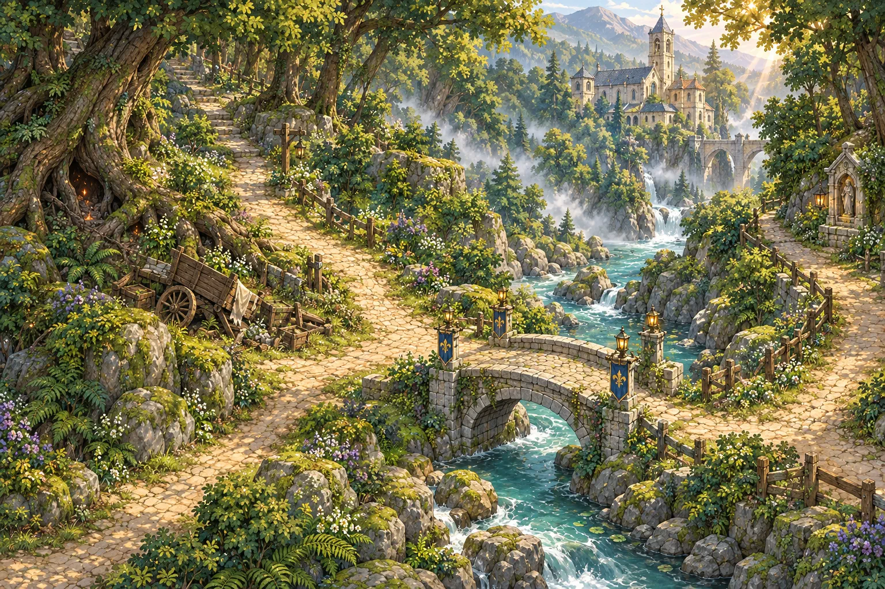
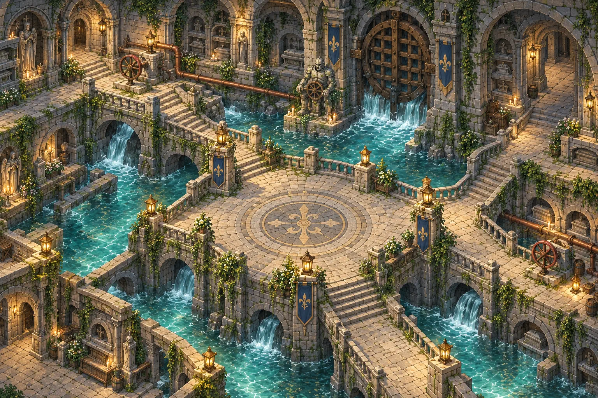
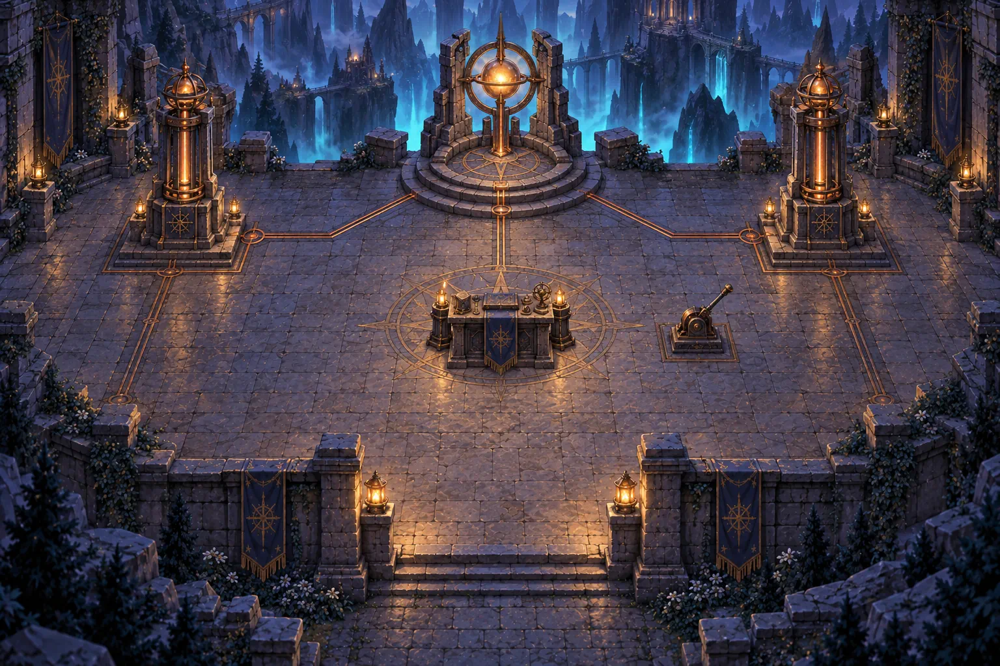

A · Escena cinematográfica
El escenario ocupa la pantalla y los comandos viven en una franja discreta. La cámara acompaña los ataques.

Viajero · 30 PGElara · 23 PGEco de ceniza · 48 PG
Qué transmite: aventura, personajes y peligro en el mismo espacio.
- Más parecido a una escena de historia.
- Ideal para ataques con cámara y efectos.
- El entorno sigue siendo protagonista.
B · Tablero táctico con profundidad
La cuadrícula queda integrada en el suelo, con perspectiva, relieve y zonas de peligro que se leen de inmediato.

MoverAtacarTécnicaProteger
Qué transmite: decisiones, distancia y control del espacio.
- Conserva la estrategia del sistema ATB.
- Las amenazas se ven antes del daño.
- Funciona muy bien para jefes y mecanismos.
C · Duelo de gran escala
Los personajes crecen dentro del encuadre y el enemigo domina el fondo. El ataque se convierte en un momento memorable.

◆ Resonancia listaPiedra ancla · pulso anunciadoRonda 04
Qué transmite: impacto, espectáculo y urgencia narrativa.
- Ideal para guardianes y el Coro.
- Da espacio a animaciones de técnica doble.
- Puede usarse solo en momentos clave.